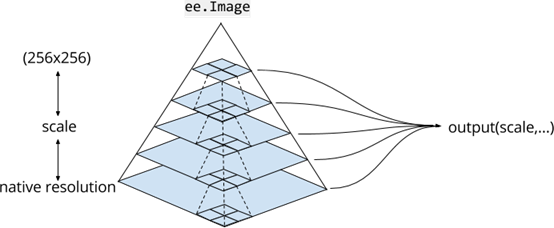
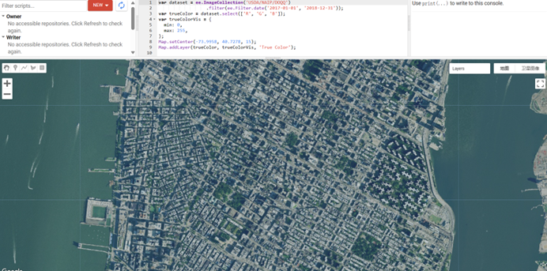

6 Week 6 GEE
6.1 Summary
6.1.1 What is Google Earth Engine
A planetary-scale platform for Earth science data & analysis. Google Earth Engine
Google Earth Engine is a cloud-based platform developed by Google that allows users to analyze and visualize large geospatial datasets. It combines a vast archive of satellite imagery and other geospatial data (Google Earth Engine Data Catalog) with a set of analysis capabilities powered by Google’s computational infrastructure. Developer’s document: (Google Earth Engine Documention)
6.1.2 Data formats
- Image = raster (Has bands)
- Feature = vector (geometry and attributes (dictionary of properties in GEE))
6.1.3 Client vs server side
GEE uses Browser/Server Architecture:
- In frontend – is Client side (for users)
- In backend – is Server side (for complex calculation)
6.1.4 Scale
In GEE the scale (resolution) is set by the output not input. (Earth Engine selects the pyramid with the closest scale to that of your analysis (or specified by it) and resamples as needed)

6.2 Application
6.2.1 Basic guiding of user interface

6.2.2 Constructor
IMG/Raster:
var dataset = ee.ImageCollection('LANDSAT/LC09/CO2/T1_L2');Vector:
var dataset = ee.FeatureCollection('users/andrewmaclachlan/india');
6.2.3 Functions:
There is a list of common functions that can be used in GEE.
Geometry operations (e.g. spatial operations)
Joins: left/right/inner join && spatial join
Zonal statistics: average temperature per region && mean/maximun value
High/Low pass filtering: Smoothing and sharpening
Methods
- Machine learning and Deep learning; Classification (Supervised and unsupervised); Regressions
Applications/outputs
- Online charts； Scalable geospatial applications with GEE data; Users interactive interface (query the data && Visualize the results)
6.2.4 Categories of geospatial data
(available in the GEE Data catalogue. (Google Earth Engine Data Catalog))
6.2.4.1 High-Resolution imagery
Name: NAIP: National Agriculture Imagery Program
Time Availability: 2002-06-15T00:00:00Z–2022-12-12T00:00:00
Resolution: 0.6 meters
Bands
| Name | Units | Description |
|---|---|---|
R |
dn | Red |
G |
dn | Green |
B |
dn | Blue |
N |
dn | Near infrared |

6.2.4.2 Land Surface Diagnostics
MERRA-2 M2T1NXLND: Land Surface Diagnostics V5.12.4(Land Surface Data)
M2T1NXLND (or tavg1_2d_lnd_Nx) is an hourly time-averaged data collection in Modern-Era Retrospective analysis for Research and Applications version 2 (MERRA-2). This collection consists of land surface diagnostics, such a baseflow flux, runoff, surface soil wetness, root zone soil wetness, water at surface layer, water at root zone layer, and soil temperature at six layers. The data field is time-stamped with the central time of an hour starting from 00:30 UTC, e.g.: 00:30, 01:30, ... , 23:30 UTC.
MERRA-2 is the latest version of global atmospheric reanalysis for the satellite era produced by NASA Global Modeling and Assimilation Office (GMAO) using the Goddard Earth Observing System Model (GEOS) version 5.12.4. The dataset covers the period of 1980-present with the latency of ~3 weeks after the end of a month.
Resolution: 69375 meters
6.2.4.3 Climate and Atmospheric Data
Climate and atmospheric data from the European Space Agency’s Sentinel-5p satellites help monitor environmental impacts of conflicts. Some satellites measure gases like nitrogen dioxide, methane, and ozone daily, with high resolution, aiding in pinpointing local pollution sources like oil refineries or power plants.
Copernicus Atmosphere Monitoring Service (CAMS) Global Near-Real-Time. (CAMS Data)
Dataset Availability: 2016-06-22T12:00:00Z–2024-02-29T12:00:00
Resolution: 44528 meters
The Copernicus Atmosphere Monitoring Service provides the capacity to continuously monitor the composition of the Earth’s atmosphere at global and regional scales. The main global near-real-time production system is a data assimilation and forecasting suite providing two 5-day forecasts per day for aerosols and chemical compounds that are part of the chemical scheme. Prior to 2021-07-01 only two parameters were available, 1. Total Aerosol Optical Depth at 550 nm surface 2. Particulate matter d < 25 um surface Note that system:time_start refers to forecast time.
USGS Landsat 8 Level 2, Collection 2, Tier 1
This dataset contains atmospherically corrected surface reflectance and land surface temperature derived from the data produced by the Landsat 8 OLI/TIRS sensors. These images contain 5 visible and near-infrared (VNIR) bands and 2 short-wave infrared (SWIR) bands processed to orthorectified surface reflectance, and one thermal infrared (TIR) band processed to orthorectified surface temperature. They also contain intermediate bands used in calculation of the ST products, as well as QA bands. Landsat 8 SR products are created with the Land Surface Reflectance Code (LaSRC). All Collection 2 ST products are created with a single-channel algorithm jointly created by the Rochester Institute of Technology (RIT) and National Aeronautics and Space Administration (NASA) Jet Propulsion Laboratory (JPL).
Dataset Availability: 2013-03-18T15:58:14Z–2024-02-25T03:20:27
Resolution: 30 meters
Band: ST_B10 : Band 10 surface temperature
6.3 Reflection
This week’s lecture briefly introduce the Google Earth Engine (GEE) and its possible application aspects. In summary, GEE organizes raster data as images and collections, allowing for JavaScript-based analysis on both client and server sides. It employs loops and mapping techniques for data manipulation. GEE provides functions for loading collections, reducing images by region or neighborhood, performing regression analysis, and joining and filtering datasets, facilitating efficient geospatial analysis.
6.3.1 New terms
pyramid: a multi-resolution representation of an image dataset
resample: the process of changing the spatial resolution of a raster dataset
land surface diagnostics: a set of methods and tools used to analyze and understand various aspects of the Earth’s land surface